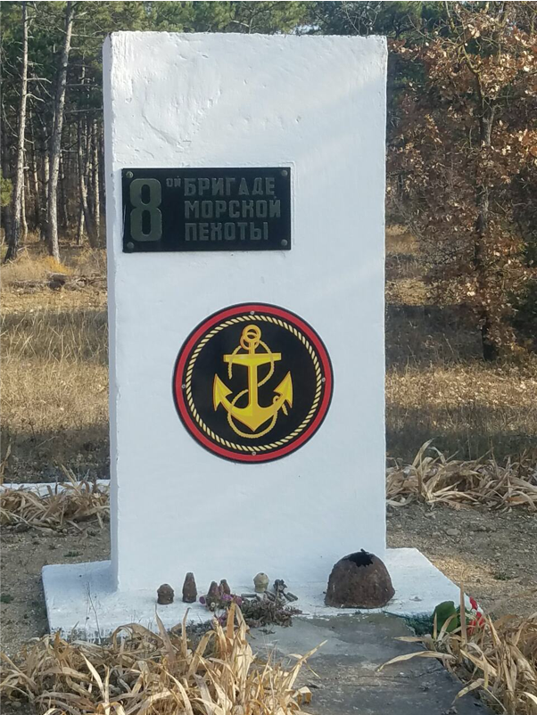
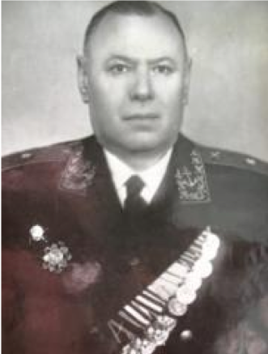
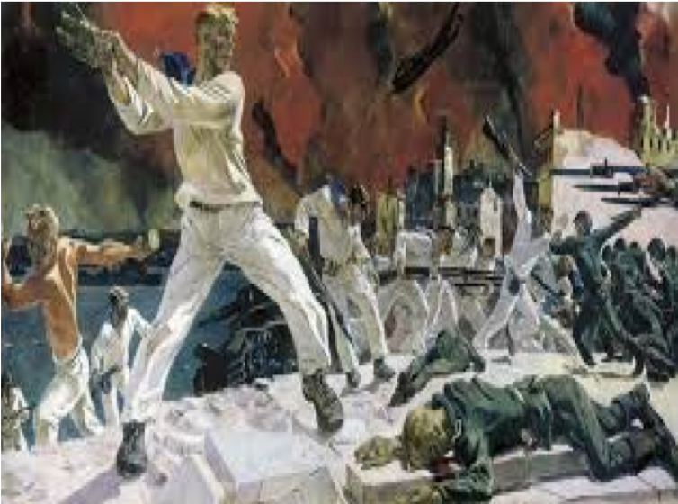
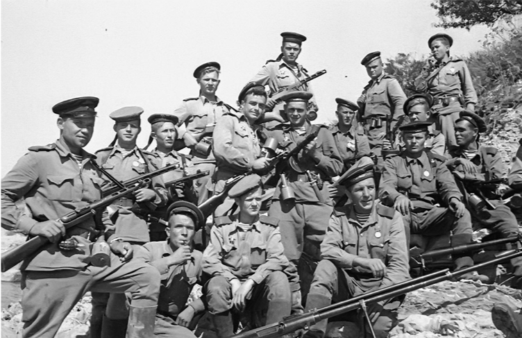
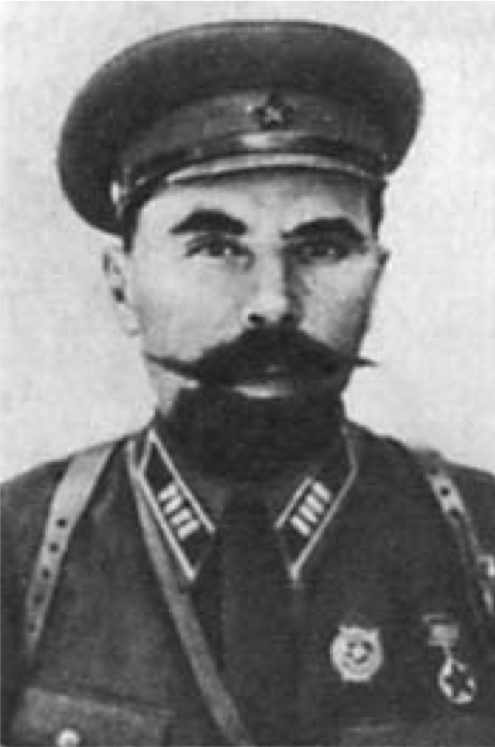
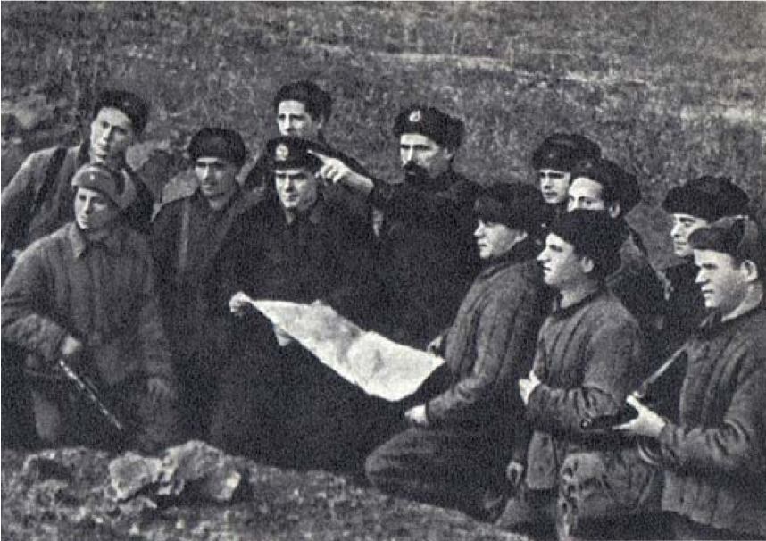

8-я бригада морской пехоты была сформированна из моряков береговых частей и кораблей Черноморского флота.
Памятник был сооружен студентами Севастопольского приборостроительного института.

Командир 8-й бригады полковник В. Л. Вильшанский.

Ими были зняты три высоты между речками Бельбек и Кача. Во время своих атак они истребили более двухсот гитлеровцев, захватили 3 орудия, 10 минометов, 60 пулеметов противника.

Ими были зняты три высоты между речками Бельбек и Кача. Во время своих атак они истребили более двухсот гитлеровцев, захватили 3 орудия, 10 минометов, 60 пулеметов противника.

В январе 1942 года на базе 1-го полка была вновь создна 8-я бригада под командованием полковника Горпищенко П.Ф.

Горпищенко П.Ф. (дает боевое задание разведчикам), 1942